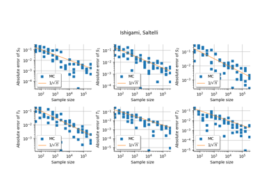

Sensitivity methods¶


Distribution of the Sobol’ indices on Ishigami function
Distribution of the Sobol' indices on Ishigami function

Convergence of estimators on Ishigami
Convergence of estimators on Ishigami
Distribution of the Sobol’ indices on Ishigami function
Convergence of estimators on Ishigami